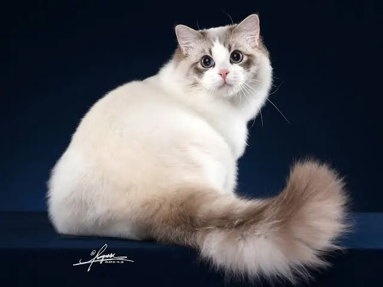
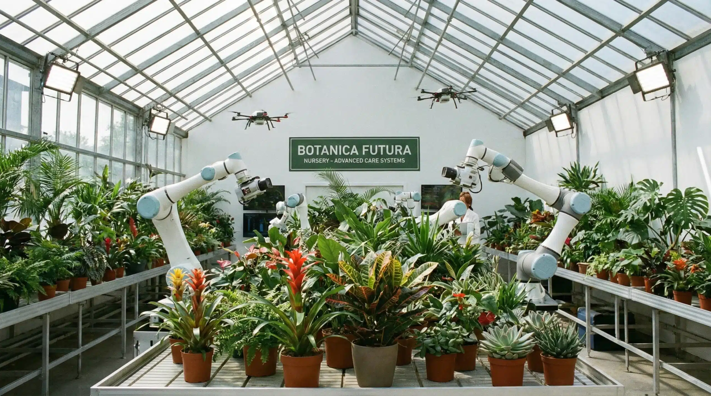

About Me
My name is Gilbert. I am a passionate Junior Software Developer who enjoys turning ideas into practical, user-friendly digital solutions. I have a strong interest in software development, problem-solving, and learning new technologies.
I am continuously building my skills through personal projects, hands-on practice, and exploring modern development tools and best practices. I enjoy writing clean, maintainable code and working through challenges to create solutions that are both functional and reliable.
As I grow as a developer, I am excited to contribute to real-world projects, collaborate with other developers, and continue learning along the way. I am currently open to opportunities where I can apply my skills, gain valuable experience, and grow as a software professional..
My Skills
- HTML Mark-up Language
- CSS styling
- Javascript
My Projects
Responsive Cat Website

Cat Adoption WebIn this project, my task solely was to build a responsive website for a client who runs a cat adoption agency. The website needed to display various breeds of cats in a visually appealing and accessible manner. I was able to do this using CSS Flexbox to ensure the website looked great on all devices, from desktops to mobile phones hence the responsiveness. You can check my project on my GitHub link above.
Automated Garden Management System

Automated-GMSIn this project, I was able to apply my knowledge of JavaScript statements to create a program that simulates an automated garden management system. Therefore to build the project I used selection and repetition statements to control various aspects of the garden, such as watering plants, controlling garden lights, and adjusting the soil moisture level.